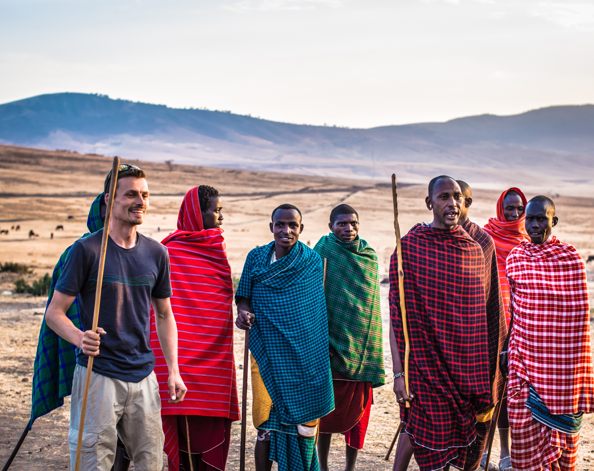
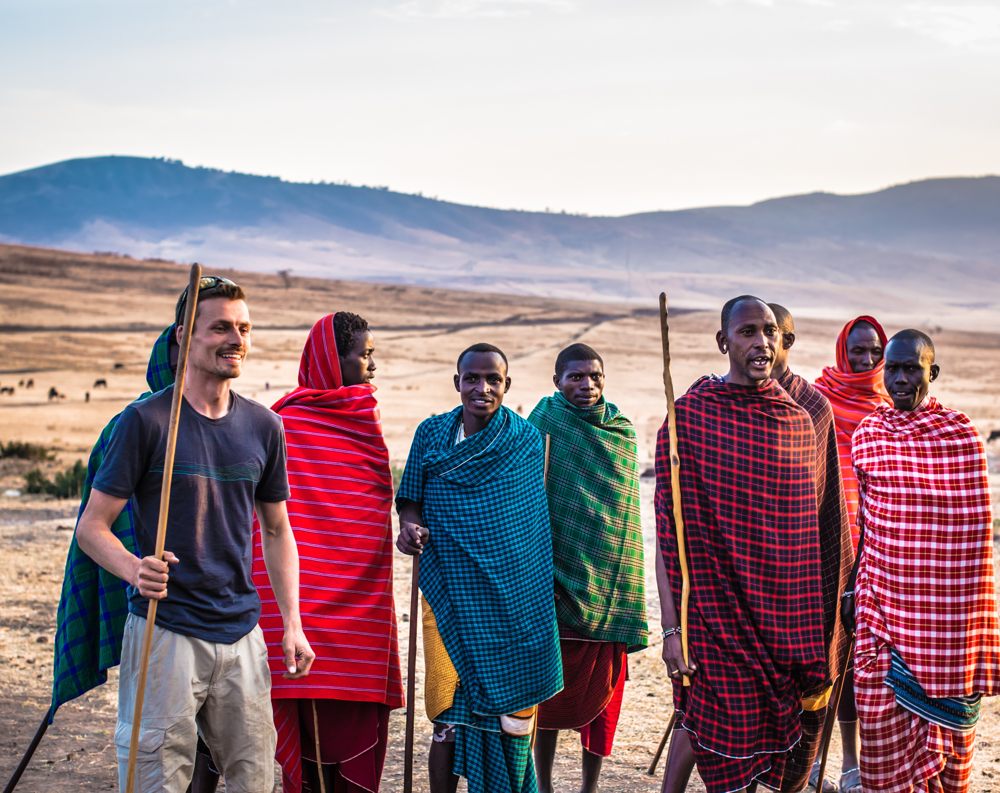
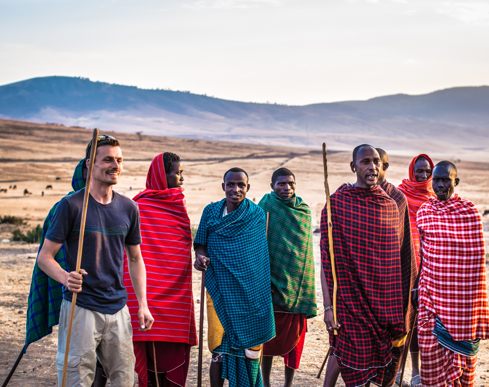

The Great Wildebeest Migration, is one of the “Seven New Wonders of the World”. No where in the world is there a movement of animals as immense as the wildebeest migration, over two million animals migrate from the Serengeti National Park in Tanzania to the greener pastures of the Maasai Mara National Reserve in Kenya during July through to October. The migration has to cross the Mara River in the Maasai Mara where crocodiles will prey on them.
NB:We Offer Suprises For : Honeymoon,Anniversary,Babymoons,Engagement,Birthdays,Graduation!

| HOTEL | VALIDITY | VAN PRICE | CRUISER PRICE |
|---|---|---|---|
| AA Lodge mara | 3rd Jan - 31st Mar 1st Apr - 30th Jun | Ksh. 18,500/- Ksh. 18,000/- | Ksh. 21,000/- Ksh. 20,000/- |
| Azure mara lodge | 1st Jan - 30th Jun | Ksh. 31,500/- | Ksh. 34,500/- |
| Sekenani Sweet Acacia | 3rd Jan -30th June (standard) 3rd Jan - 30th Jun (Deluxe) | Ksh. 20,500/- Ksh. 31,500/- | Ksh. 22,500/- Ksh. 33,500/- |